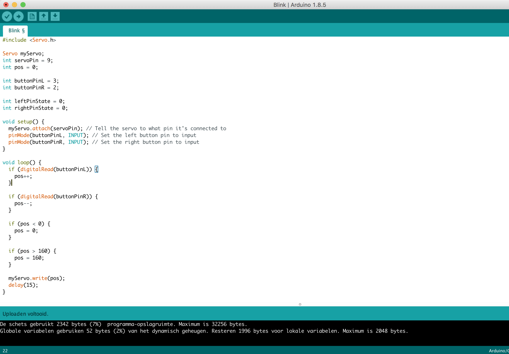

During this workshop I've worked with Arduino kit. Arduino is an open source computer hardware and software company, project, and user community that designs and manufactures single-board microcontrollers and microcontroller kits for building digital devices and interactive objects that can sense and control objects in the physical and digital world.
This assignment is about testing some more possibilities of LED's. Each pin should have a nickname, for example 'LED_BUILTIN' or the number of the pin itself. So instead of the name LED_BUILTIN I have used '13' in those places in the code. Or for that matter any other pin number.
I have extended the circuit with a second LED as shown in the image. As well I have added a second LED (yellow), resistor (also 220Ω) and 2 jumper wires. The second LED I have connected to Arduino pin 12.
The green light should blink twice as fast as yellow.
Instead of only turning LEDs on and off, you can also control the brightness of LEDs. The analogWrite() function allows you to set the brightness of an LED from 0 (completely off) to 255 (completely on) or anywhere in between. You may notice that not all pins are suitable for this. It must be pins that are suitable for Pulse Width Modulation (PWM). Normally a pin can either be turned on or off. On the Arduino board pins 3, 5, 6, 9, 10 and 11 are suitable for PWM. On the board itself this is indicated by the ~ symbol next to the pin number.
I have extended the code so that one LED slowly fades in and the other fades out at the same time.
You have seen in the previous exercise that the Arduino board can have an analog output. In this exercise you are going to see how to work wuth a rotary knob that gives an analog input to the Arduino. The middle lug must be connected to the analog input pin (A0) where you will read the values. One of the two outer pins must be connected to the 5v and the other one goes to GND.
I have cnaged the code so that one LED fades in while the other fades out and vice versa.
In the previous exercise you have seen a LED dimmed with a potentiometer. In this exercise you will see how the LED with an LDR (Light Dependent Resistor), a sensitive resistor that measures the amount of light, works. This is similar to the sensor that is used to turn street lights on when it gets dark outside. This sensor is going to be used to dim the LEDs.
I have connected one leg of the LDR to 5V, and the other leg on pin A0. On the leg that is connected to A0, I have also connected a 10kΩ resistor [brown black orange gold]. The other side of the resistor is connected to GND.
For this exercise I have used the Arduino board as an input device for my computer by creating a connection between Arduino and Processing. Processing and Arduino work well together. You can use them together to make real world electronic input-devices for a digital environment or vice versa.
The simplest sensor is a button. A button functions by closing a circuit and this can be sensed by the Arduino. In this exercise you will see how to use buttons in different ways.
I have oriented the LED the correct way. Also the two resistors have different values. I have connected the resistor closest LED is 220Ω [red red brown gold], and the resistor closest to the button is 10kΩ [brown black orange gold].
Two buttons are more fun than one button. That;s why I have added another button so that the LED lights up when one button of the two buttons is pressed, but not both.
Servomotors are motors that turn to a precise position. They are applicable for many purposes, but the most striking application is that of remote controlled vehicles. For example, they are used to steer the wheels of a remote controlled car, or to turn the helm of a remote controlled boat. Another application is to run a security camera to focus on something specific.
The servo has three wires that connect to the Arduino board. I had to pay attention to the colour wire that come out of the servo. Brown goes to GND, red goes to 5V and orange goes to pin 9.
I have changed the code in a way that the servo is moving in a more interesting way.
You have now seen that a servo can turn to a certain position. This can be combined with the potentiometers and buttons. The buttons should control the servo. One button should move the servo clockwise and the other counter-clockwise.

You can also connect a speaker, so the Arduino board can produce sound. This happens with a so-called Piezo speaker that consists of a plate of two different metals.
To connect it I have used a 220Ω resistor [red red brown gold]. In the code I have used the function tone(). This function actually makes the tone. The first parameter states which pin the speaker is connected to. The second parameter determines the frequency (in hertz). The final parameter states the duration (in milliseconds). The last parameter is optional and when it is omitted, the tone will ring indefinitely until a new tone starts or the tone is stopped with the noTone() function.
I have cnaged the code so the arduino plays theme of Games of Thrones now.